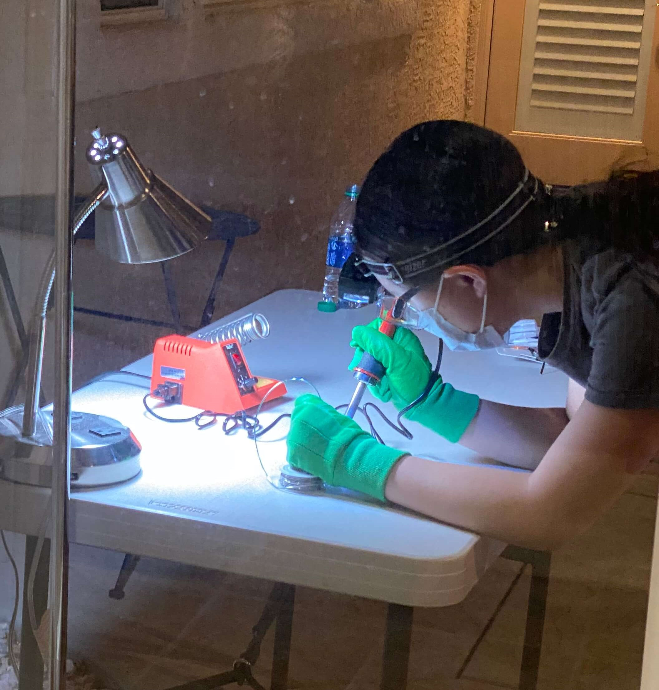
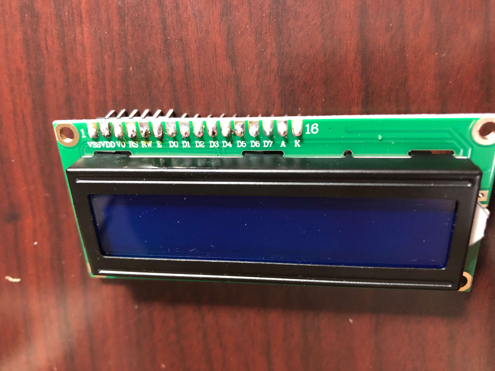
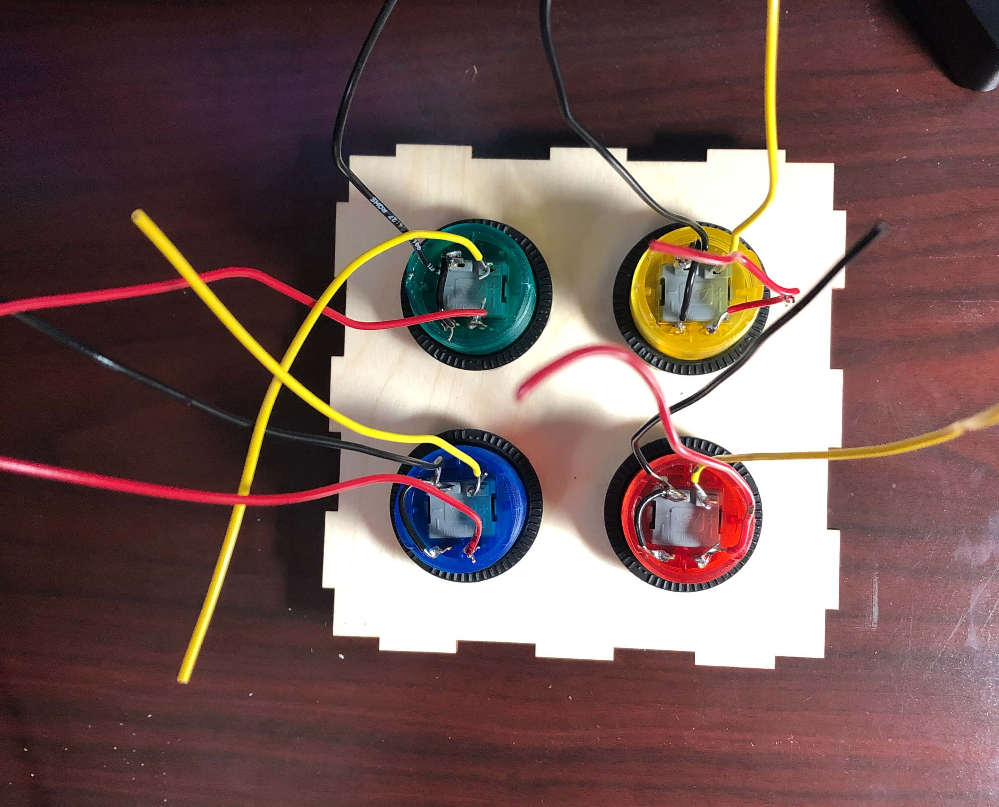
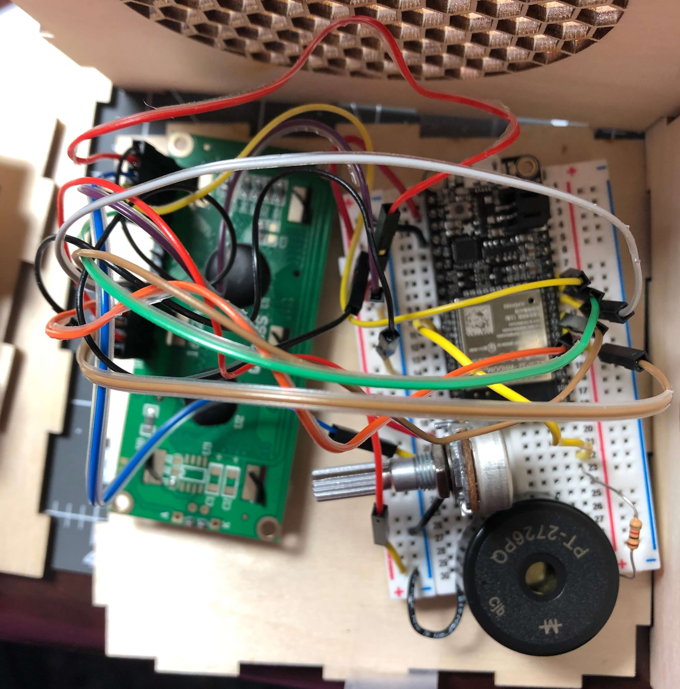
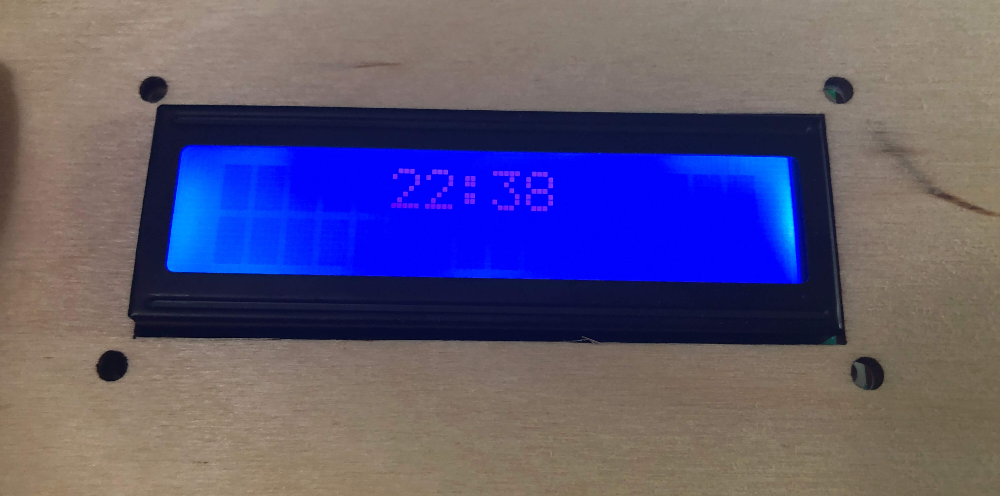

Most of my progress on my final project this week was hardware-wise. Since my buttons and LCD display for my final project finally came in the mail, I was able to solder the components for my final project this week. I've never soldered before, so I was very nervous when handling the soldering iron and solder. However, after watching several YouTube videos on how to solder, I finally gathered up the courage to solder my components.
I started with the LCD display. The display came with 16 pins that I had to solder onto the 1602 LCD display. To do this, I first inserted the pins into the sockets on the display and propped it up on the table to solder it. Since I was using 60/40 solder which contains lead, I was really worried about the health risks, so I ended up wearing safety googles, gardening gloves, and a face mask while soldering, and I set up a table outside so that there would be good circulation while I was soldering. You can never be too safe! When I started to solder, I realized that I should have followed Victoria's advice and gotten a pointed tip instead of using the included chisel tip in the box since it was really hard to precisely press the soldering iron onto the joint since the tip was so big.

When soldering, I made sure to clean the soldering iron with the sponge and tin it occasionally. To melt the solder, I pressed the soldering iron onto the joint and pressed the solder to the other side of the joint rather than the iron. Although my soldering does not look perfect, I checked the connections with my multimeter afterwards and made sure that the LCD display worked by using some sample code from the SunFounder website.

Next, I soldered wires onto the arcade button terminals. Since the laser-cut parts that I sent to be printed arrived in the mail, I was able to screw in the buttons to allow for the buttons to stay in place better while I was soldering. Before soldering, I twisted the wires into the terminals to make better connections. I also connected the ground wires for the switch and LED in each button to minimize the amount of wires coming out from the buttons. This was easier than the LCD display to solder since the chisel tip was not too big to perform the task, but I realized that sometimes I wasn't careful with my wires and accidentally touched them to the hot metal rod while I was soldering the joints. As a result, some of the rubber burnt off, but the metal wire was only exposed on one wire, so hopefully this will not pose any problems.

With my LCD display soldered, I was able to finish adding it to my original circuit with my Huzzah board and buzzer. In order to allow for the adjustment of the contrast on the LCD display, I hooked a potentiometer into the circuit as well. Since my box will not fit the long breadboard, I used one of the smaller breadboards.

I didn't do that much coding this week, but I did get some help on a problem that I had in my alarm code. Before, my alarm would stop ringing once the actual time was not equal to the time set for the alarm. To remedy this, I set a variable called alarm_condition, which is initially set to 0 and then changed to 1 when the condition is met that the alarm time is equal to the actual time. I also set another variable called simon_solved which is also intially set to 0. Once I program the actual Simon Says mechanism, the function will set simon_solved equal to 1, which will trigger a conditional statement that sets alarm_condition equal to 0 to turn off the alarm. Here are the changes to my conditional statements:
if (alarmString == actualTime) { // compare the input of alarm status received from firebase
alarm_condition == 1; //initialize function to buzz
} else { // compare the input of alarm status received from firebase
Serial.println("Alarm Turned OFF");
}
if (alarm_condition == 1) { //function for alarm buzzing
Serial.println("Alarm Turned ON");
myTone(buzzerPin, 262, 500);
delay(1000);
}
if (simon_solved == 1) { //function to turn off alarm buzzing after simon says game
digitalWrite(5, LOW);
alarm_condition == 0;
Serial.println("Alarm Snoozed");
}
I also figured out how to display the time on the LCD display. Since I already had a variable that gives the actual time, I just had to call on that variable in led.print and set the cursor to the middle of the screen to center the time. I put the calculations for finding the actual time as well as the LCD displaying the time in a while loop that would function as long as the board was connected to Wifi since the time on the display needs to update when the time gotten from the NTP server changes. Here is the code for that:
while (WiFi.status() == WL_CONNECTED) {
FormattedTime = timeClient.getFormattedTime(); //gives current PST time in HH:MM:SS
int splitT = FormattedTime.indexOf("T");
actualTime = FormattedTime.substring(splitT + 1, FormattedTime.length() - 3); //splits current PST time string to HH:MM
Serial.println (actualTime);
lcd.setCursor(5, 0); //begin display on line 1, space 5
lcd.print(actualTime);
}

The next steps in my final project will be to connect the arcade buttons to my Huzzah and begin to program the Simon Says mechanic of the alarm clock. If I have time, I might also try to program several songs into the alarm on the buzzer so that whoever uses the alarm can choose what song they want played to wake them up.